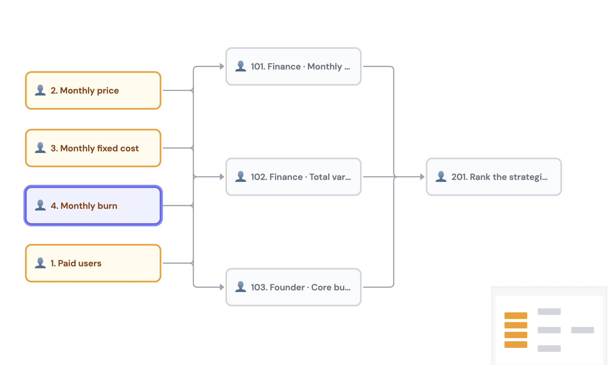

Startup Financials (fixed)
Working Flow

Inputs
| Input | Value |
|---|---|
| Free users | 1,000 |
| Paid users | 80 |
| Monthly price per paid user | $20 |
| Monthly fixed cost | $6,000 |
| Variable cost per active user | $2 |
Pinned assumptions
- Variable cost applies to every active user — free and paid. Free users are not free to serve; each of the 1,080 active users costs $2/month.
- When solving for the break-even number of paid users, the free base stays fixed at 1,000. You are adding paid users on top of the existing 1,000 free users.
- Price ($20) and fixed cost ($6,000) are constant. Adding a paid user adds $20 of revenue and $2 of variable cost, for a net contribution of $18. The existing 1,000 free users keep costing $2 each.
- “Burn” means the monthly operating loss = revenue − total monthly cost, reported as a positive dollar figure of cash lost per month.
- “Gross margin” means the per-paid-user contribution margin:
(price − variable cost) / price.